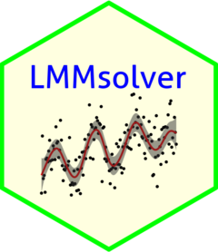

Changelog
Source:NEWS.md
LMMsolver 1.0.11
- New function
mLogLik()for the calculations of the log-likelihood and first derivatives as function of precision parameterstheta. - A new argument
derivadded topredict()to calculate the first derivatives forspl1D()functions. - Two examples in vignette updated with predictions of derivatives and corresponding standard errors.
- bug fixed for
thetaargument ofLMMsolve().
LMMsolver 1.0.9
CRAN release: 2025-01-14
- Binomial response can now also be modelled as
fixed = cbind(failure, succes) - Categorial response using
family = multinomial() - Vignette updated, with separate section for GLMM.
- doi-link added for
LMMsolver. - argument
offsetcan be defined as numeric or (new) as column name in data frame. - example added to
predict()function. - problem with calculation of standard errors fixed, because of minor change in
spam. - bug fixed related to convergence for GLMM.
LMMsolver 1.0.8
CRAN release: 2024-08-26
- Vignette has been rewritten, with a new introduction section.
- The function
predict.LMMsolveadded. - Extension of gam models, combining different
splxD()is possible now. - Correction of upper bound nominal effective dimension for large data sets.
- new 2D example Sea Surface Temperature added.
- Issue with product of two large matrices fixed.
- Improved efficiency initialization for large datasets.
- Bug in
grpThetaargument ofLMMsolve()fixed. - Deviance function changes, with extra argument
relative, giving the relative conditional deviance as defined in McCullagh and Nelder. The default isrelative=TRUE, forrelative=FALSEit returns-2*logLik(obj)
LMMsolver 1.0.7
CRAN release: 2024-04-16
- Improved efficiency for models where the
residualargument ofLMMsolve()is used. - A data.frame
tracewith convergence sequence for log-likelihood and effective dimensions, added as extra output returned byLMMsolve(). - Bug in v1.0.6 for GLMM models fixed.
- Coefficients for three way interactions with one factor and two non-factors are now labelled correctly.
- Standard errors in function
obtainSmoothTrend()for GLMM models are now calculated.
LMMsolver 1.0.6
CRAN release: 2023-11-27
- A new argument
grpThetaforLMMsolve()to give components in the model the same penalty. - The dependency package
spis replaced bysf. - A small bug for models with more than 10.000 observations and only a numeric variable in the random part of the model is fixed.
- Weights are now checked for missing values after removing observations with missing values in response. This prevents spurious errors when both response and weight are missing.
LMMsolver 1.0.5
CRAN release: 2023-04-14
- Small bugs in assignment of names to fixed model coefficients when columns were dropped from the model are fixed.
- Calculation of standard errors for coefficients, with
coef(obj, se = TRUE). - Implementation of Generalized Linear Mixed Models (GLMM) with additional argument
familyinLMMsolvefunction. - Variance components and splines can be conditional on a factor. For variance components, this is implemented in the
cf(var, cond, level)function. For 1D and 2D splines, additional argumentscondandlevelare added. - Several small bugs fixed.
LMMsolver 1.0.4
CRAN release: 2022-12-15
- Improved computation time for calculation of standard errors. Implementation in C++ and using the ‘sparse inverse’.
- Row-wise Kronecker product for
spammatrices implemented in C++. Important for tensor product P-splines with improved computation time and memory allocation.
LMMsolver 1.0.3
CRAN release: 2022-08-19
- Improved computation time and memory allocation, especially important for big data with many observations (the number of rows in the data frame).
- Replaced the default
model.matrixfunction byMatrix::sparse.model.matrixto generate sparse design matrices. - In function
obtainSmoothTrendthe standard errors are only calculated ifincludeIntercept = TRUE. - Several small bugs fixed.
LMMsolver 1.0.2
CRAN release: 2022-04-21
- First and second order derivatives are now calculated correctly.
- Several small bugs fixed.
- Updated tests to pass checks on macM1.
LMMsolver 1.0.1
CRAN release: 2022-03-28
-
weightsargument in LMMsolve function added - Function
obtainSmoothTrendreturns in addition to the predictions the standard errors. - Generalized Additive Model (GAM) added for one-dimensional splines, i.e. more
spl1D()components can be added to thesplineargument of LMMsolve function - Improved efficiency of calculating the sparse inverse using super-nodes.
- Replaced the original P-splines penalty
D'Dwith a scaled version which is far more stable if there are many knots. - Several bugs fixed.